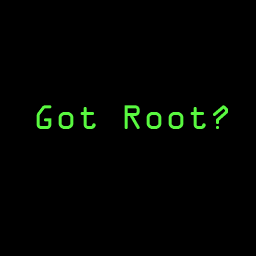

HaHa You Got Owned By Happy_Hardcor3
-n- biosdisk
of
Root Shell Hackers.
If
you enjoy getting owned you wont fix your security problem if you
don't
you will get some new security software or a new technician.
hehe.
Shoutout's
to Root-Core, RSH, initd_, UnixFu, Kevin, Buz17, and all
the
rest of the smart ones if your dumb take your ass home.
207.193.153.3
URL Present Apache/1.2.5 Cobalt
207.193.153.5
URL Present Apache/1.3.9 (Unix) (Red Hat/Linux)
try to own these when ya do find me and tell me.
